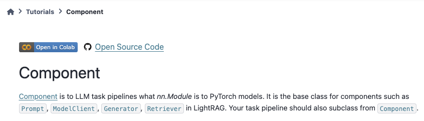

The /adalflow directory contains the source code for the AdalFlow library,including its implementation, tests, and a dedicated pyproject.toml file.
The /docs directory houses the documentation for the AdalFlow library and also includes its own pyproject.toml file.
We use reStructuredText for the documentation. For more details, please refer to README.md under the ./docs directory.
Additionally, it includes the following directories:
/tutorials: Contains tutorials for the AdalFlow library, for each core feature or class.
/use_cases: Covers various use cases, likely end to end applications even with auto-optimization.
/benchmarks: Includes benchmarks to evaluate the library with other libraries or frameworks.
/notebooks directory contains all notebooks used across tutorials, use_cases, and benchmarks.
Type: The type of the issue, such as bug, feature, or discussion.#
We use three categories of labels in parallel:
Type of issue: There are 7 types of issues.
[adalflow] indicates the issue relates to AdalFlow source code in the /adalflow directory.
Within this directory, the /adalflow contains the source code, and the /tests contains test code.
3 labels here include: integration, improvement, corefeature.
We use bug for code-related issues across all directories.
documentation for items in the /docs, /tutorials, /use_cases, /benchmarks, and /notebooks directories.
newusecases/benchmarks for issues in /use_cases and /benchmarks.
question for general inquiries.
How to proceed: There are 4 labels.
goodfirstissue for tasks suitable for new contributors.
wontfix for issues that won’t be addressed in the library.
duplicate for issues already tracked elsewhere.
helpwanted indicates priority signal, discussion, and pr are needed.
Priority: There are 3 levels.
P0 for the highest priority issues.
P1 for medium priority.
P2 for the lowest priority.
Note
All the above 14 labels can be used for both issues and PRs.
ready-for-pr is exclusive to issues and indicates the issue is ready for a PR.
ready-to-go is exclusive to PRs and indicates the PR is ready to be merged.
This following table will provide a quick overview of them all.
While our team marks priorities based on our best judgment, we also welcome community input to help us prioritize issues.
You can use 👍 to indicate how important a particular issue is to you.
We’ll consider the #of👍/time_period as an additional signal for setting priorities.
tests within /adalflow/tests to understand everything you need to know.
This will help you understand everything necessary for your contribution.
We’ll provide examples for each type of contribution in the next section.
For integration, you need to know the relevant SDKs and APIs.
For documentation, you need to know the structure of the documentation and the writing style.
Create a solution proposal and gather input. Write your solution proposal in the issue comments.
Alternatively, you can use a publically accessible tool like GoogleDoc or Colab to share your proposal.
The AdalFlow team and the community will review and provide feedback before your start coding.
The team and core contributors can label it as ready-for-pr when it is ready for a PR.
This step is especially crucial for complex features. You can also discuss your proposal on our Discord.
Work on it. Follow the PR & Review Process to begin coding, testing, documenting, and reviewing.
All existing model clients are located in the /adalflow/adalflow/components/model_client directory.
The tutorial model_client will help you understand the base class and how it is designed.
In general, OpenAI SDK is trending to the the industry standard.
And you can measure your targetting SDKs by the difference between these two.
But overall, the OPENAI integration consists of: coding, testing, documentation.
Coding includes:
A OpenAIClient class that inherits from the base class ModelClient.
Add the sdk package as an optional package in the adalflow/pyproject.toml file.
Add the sdk package as lazy import in the adalflow/adalflow/utils/lazy_import.py file.
Call the lazy import in the adalflow/adalflow/components/model_client/__init__.py file.
Import the new client in the adalflow/adalflow/__init__.py file so that we can call it directly from the adalflow package.
Testing includes:
Create a test file test_XX_client.py in the adalflow/tests/ directory. You can use test_openai_client.py as a reference.
Add the package to the adalflow/pyproject.toml file under the [tool.poetry.group.test.dependencies] section.
Add the test case for the new client in the test file.
Follow the adalflow/tests/README.md to run the test.
Documentation includes:
Add examples on how to use the new client in the tutorials directory. You can use tutorials/ollama_client_note.py as a reference.
Make sure you add the new client package in the root pyproject.toml file under the [tool.poetry.dependencies] section.
Ensure the API reference is correctly rendenered in the docs directory.
For example, with ollama_client, you need to add the following line in the docs/source/apis/components/index.rst file:
components.model_client.ollama_client
Add examplary API configurations in the root .env_example file.
This ollama_client PR is a good example of how to integrate a new model client.
All existing retrievers are located in the /adalflow/adalflow/components/retriever directory.
The tutorial retriever will help you understand the base class and how it is designed.
The process is quite similar to integrating a model client. For documentation, ensure you add an example in retriever.
This qdrant_retriever PR is a good example of how to integrate a new database retriever.
Add notebooks for existing/new tutorials/use_cases/benchmarks#

Note
For how to add a new notebook, please follow the README.md in the notebooks directory.
Tutorials
For tutorials in our documentation, each tutorial is accompanied by two code files: one XX_note.py in /tutorials and one adalflow_XX.ipynb in /notebooks/tutorials.
You can help add the missing code file in tutorials and make sure to link them in the documentation like the above figure.
Here is one example issue and PR for adding a new tutorial: Issue 192 and PR 261.
Use Cases
For use_cases in our documentation, each use case is accompanied by source code in /use_cases and a notebook in /notebooks/use_cases.
For our existing use cases, we do not always have the corresponding notebooks. You can help add the missing notebooks for the existing use cases.
Benchmarks
So far, we are still working on the code in the /benchmarks directory. We will need help on addint the documentation along with the code.
Note: `fetch` will fetch the changes from the upstream repo, but it will not merge them into your local branch. `merge` will merge the changes from the upstream repo into your local branch.
For more detials, please refer to the Github official syncing a fork guide.
Create a new branch.
Create a new branch to ensure your changes are isolated from the main codebase. You can do this by running the following command:
gitcheckout-b<issue_number>_<issue_title>
Similarly, you always use step 3 to sync your branch with the upstream repo.
Additionally, you can use the following commands to sync:
gitfetch--all--prune
gitrebaseupstream/main
# follow git instructions to resolve conflicts
gitpushoriginyour_branch_name
Set up the pre-commit hooks.
We have a .pre-commit-config.yaml file in the root directory.
Ensure you have set up the pre-commit hooks. We recommend you to do so in the poetry environment.
The following steps will help you set up the root poetry environment and the pre-commit hooks:
Install poetry if you haven’t already:
pipinstallpoetry
You can install the dependencies by running the following command:
poetryinstall
Then you can activate the environment by running the following command:
poetryshell
Then, install the pre-commit hooks by running the following command:
pre-commitinstall
Now, you can start to commit your changes from the `/adalflow` directory next time even if you are not in the poetry environment.
If you have more questions, you can refer to the pre-commit official guide.
Commit your changes.
Once you have made your changes, you can commit them by running the following commands:
If you face “permission denied” issue, you can refer to this medium blog for help.
Create a Pull Request.
Go to your forked repository on Github and click the New Pull Request button. Make sure you select the correct branch for the base and compare branches.
Here we have a default PR template for you to fill in.
Fill in the PR template.
Make sure you fill in the PR template with the necessary information. This will help the reviewers understand your changes better.
Submit the PR
We encourage you to submit the PR as soon as possible, even if it is not ready for review. You can mark it as a draft by:
1. Clicking the Draft button on the PR page.
2. Adding [WIP] to the PR title.
Iterate your PR.
Once you have submitted the PR, the reviewers will review your changes and provide feedback. You can iterate your PR by making the necessary changes and pushing them to your branch. The reviewers will review your changes again.
Merge your PR.
Once your PR is approved, the reviewers will merge your PR for you. You can also merge your PR by clicking the Merge button on the PR page.
{kind=link}
{kind=link}
{kind=link}